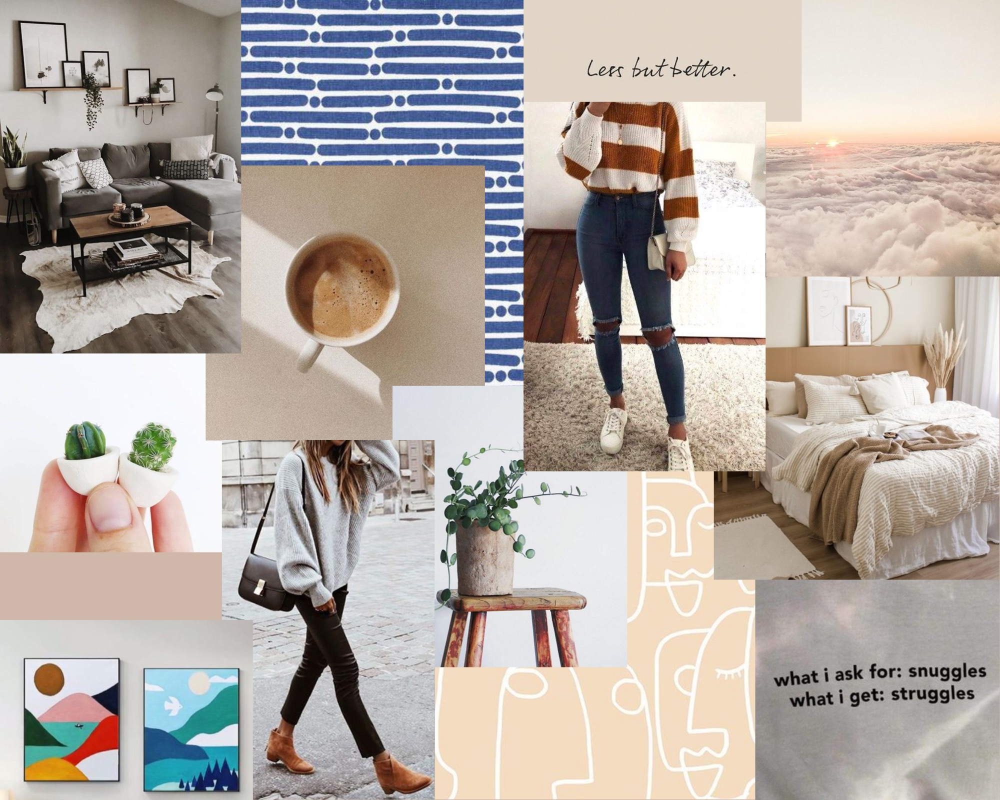

"hey, are you naomi han's sister?"
i wasn't
but thank goodness for my last name
because if it wasn't "han"
who knows if i ever would have gotten to...
watch you use an x-acto knife to cut out little doors
(où est notre monde??)
share bons gâteaux
(comme ci, comme ça!)
not take pictures in a dandelion field
(oops)
eat strawbebbies and nutella with you
:)
leave a sriracha surprise hidden in a bowl of rice
(a srirprise, if you will)
have "i don't even know the lyrics!" memorialized forever
(sniff)
watch ms. roberts' vsco girl transformation
(sksksksk)
tell you all about how i didn't have pink gold peach yet
(thank goodness i finally got her and congrats on tier 40 ;) )
evaluate all your beautiful houses
(they were always perfect, of course)
give you a chicken cracker box
("for ap psych")
watch peckert's episode of mtv cribs together
(still can't figure out where he was going)
write this little collection of a few favorite memories
i wouldn't want to have with anyone else
because i love you :)
are you a window? because hbdwindow <3
10/30/2020